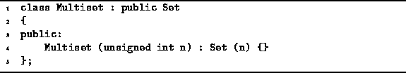

Data Structures and Algorithms
with Object-Oriented Design Patterns in C++
Data Structures and Algorithms
with Object-Oriented Design Patterns in C++A multiset is a set in which an item may appear more than once. I.e., whereas duplicates are not permitted in a regular set, they are permitted in a multiset. Multisets are also known simply as bags .
Sets and multisets are in other respects quite similar:
Both support operations to insert and withdraw items;
both provide a means to test the membership of a given item;
and both support the basic set operations
of union, intersection, and difference.
As a result, the Set abstract class
and the Multiset abstract class
share a common interface as shown in Program  .
.

Program: Multiset Class Definition
 Copyright © 1997 by Bruno R. Preiss, P.Eng. All rights reserved.
Copyright © 1997 by Bruno R. Preiss, P.Eng. All rights reserved.